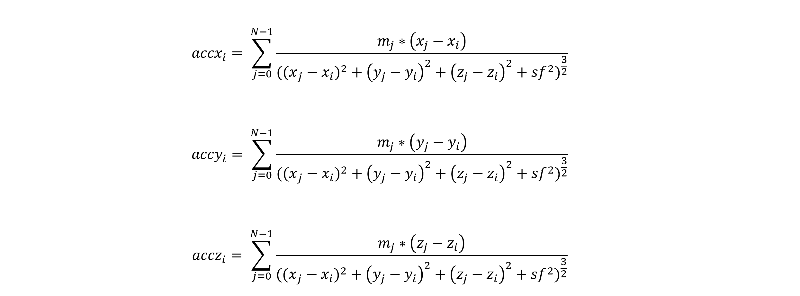
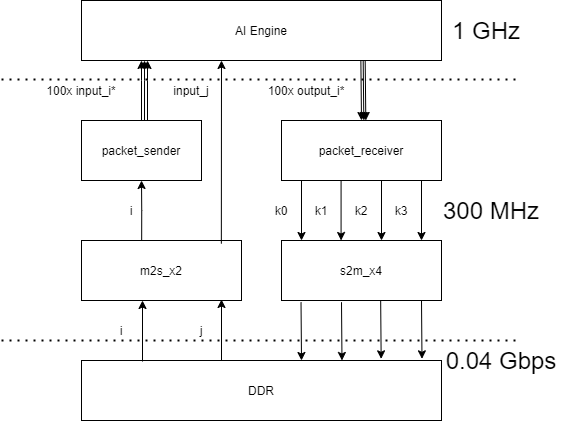

Versal™ ACAP AI Engine TutorialsSee Vitis™ Development Environment on xilinx.com See Vitis-AI™ Development Environment on xilinx.com |
N-Body Simulator¶
Version: Vitis 2021.2
Introduction¶
This tutorial is an implementation of an N-Body Simulator in the AI Engine. It is a system-level design that uses the AI Engine, PL, and PS resources to showcase the following features:
A Python model of an N-Body Simulator run on x86 machine
A scalable AI Engine design that can utilize up to 400 AI Engine tiles
AI Engine packet switching
AI Engine single-precision floating point calculations
AI Engine 1:400 broadcast streams
Codeless PL HLS datamover kernels from the Vitis™ Utility Library
PL HLS packet switching kernels
PS Host Application that validates the data coming out of the AI Engine design
C++ model of an N-Body Simulator
Performance comparisons between Python x86, C++ Arm A72, and AI Engine N-Body Simulators
Effective throughput calculation (GFLOPS) vs. Theoretical peak throughput of AI Engine
Before You Begin¶
This tutorial can be run on the VCK190 Board (Production or ES). If you have already purchased this board, download the necessary files from the lounge and ensure you have the correct licenses installed. If you do not have a board, get in touch with your Xilinx sales contact.
Documentation: Explore AI Engine Architecture¶
Tools: Installing the Tools¶
Obtain a license to enable beta devices in Xilinx tools (to use the VCK190 platform).
Obtain licenses for AI Engine tools.
Follow the instructions for the Vitis Software Platform Installation and ensure you have the following tools:
Vitis Software Platform
Xilinx Runtime and Platforms (XRT)
Embedded Platform VCK190 Base or VCK190 ES1 Base (from lounge, ask your Xilinx sales contact)
Environment: Setting Up Your Shell Environment¶
When the elements of the Vitis software platform are installed, update the shell environment script. Set the necessary environment variables to your system specific paths for xrt, platform location, and Xilinx tools.
Edit the
env_setup.shscript with your file paths:
export XILINX_XRT=/opt/xilinx/xrt
export PLATFORM_REPO_PATHS=<user-path>
export ROOTFS=$PLATFORM_REPO_PATHS/sw/versal/xilinx-versal-common-v<ver>/rootfs.ext4
export IMAGE=$PLATFORM_REPO_PATHS/sw/versal/xilinx-versal-common-v<ver>/Image
export EDGE_COMMON_SW=$PLATFORM_REPO_PATHS/sw/versal/xilinx-versal-common-v<ver>
export PLATFORM=xilinx_vck190_base_<ver> #or xilinx_vck190_es1_base_<ver> is using an ES1 board
source <XILINX-INSTALL-LOCATION>/Vitis/<ver>/settings64.sh
source $XILINX_XRT/setup.sh
source $PLATFORM_REPO_PATHS/sw/versal/xilinx-versal-common-v<ver>/environment-setup-cortexa72-cortexa53-xilinx-linux
Source the environment script:
source env_setup.sh
Validation: Confirming Tool Installation¶
Ensure you are using the 2021.2 version of the Xilinx tools.
which vitis
which aiecompiler
Goals of this Tutorial¶
HPC Applications¶
The goal of this tutorial is to create a general-purpose floating point accelerator for HPC applications. This tutorial demonstrates a x24,800 performance improvement using the AI Engine accelerator over the naive C++ implementation on the A72 embedded Arm® processor.
A similar accelerator example was implemented on the UltraScale+™-based Ultra96 device using only PL resources here.¶
| Name | Hardware | Algorithm Complexity | Average Execution Time to Simulate 12,800 Particles for 1 Timestep (seconds) |
|---|---|---|---|
| Python N-Body Simulator | x86 Linux Machine | O(N) | 14.96 |
| C++ N-Body Simulator | A72 Embedded Arm Processor | O(N2) | 124.79 |
| AI Engine N-Body SImulator | Versal AI Engine IP | O(N) | 0.004657468 |
PL Data-Mover Kernels¶
Another goal of this tutorial is to showcase how to generate PL Data-Mover kernels from the Vitis Utility Library. These kernels moves any amount of data from DDR buffers to AXI-Streams.
The N-Body Problem¶
The N-Body problem is the problem of predicting the motions of a group of N objects which each have a gravitational force on each other. For any particle i in the system, the summation of the gravitational forces from all the other particles results in the acceleration of particle i. From this acceleration, we can calculate a particle’s velocity and position (x y z vx vy vz) will be in the next timestep. Newtonian physics describes the behavior of very large bodies/particles within our universe. With certain assumptions, the laws can be applied to bodies/particles ranging from astronomical size to a golf ball (and even smaller).
12,800 Particles simulated on a 400 tile AI Engine accelerator for 300 timesteps¶

The colormap simulates the Red Shift effect in astronomy. When the particles are red, they are farther away in space (-z direction). When the particles are blue, they are closer to you in space (+z direction).
Newton’s Second Law of Motion¶
Newton’s Second Law motion in mathmatical form states the force on body i equals its mass times acceleration.
Gravity Equations - Two Bodies¶
When the force on body i is caused by its gravitational attraction to body j, that force is calculated by the following gravity equation:
Where G is the gravitational constant, and r is the distance between body i and body j. Combining Newton’s second law motion with the gravity equation gives the following equation for calculating the acceleration of body i due to body j.
We multiply by the unit vector of r to maintain the direction of the force.
If given an initial velocity (vt) and position (xt), we can calculate our particle’s new position, acceleration, and velocity in the next timestep (t+1).
Position Equation: xt+1=xt+v*ts
Aceleration Equation: (from above)
Velocity Equation: vt+1=vt+a*ts
Gravity Equations - N Bodies¶
Our NBody simulator will extends the above gravity equation to calcuate positions, accelerations, and velocities in the x, y, and z directions of N bodies in a system. For the sake of simplicity in implementation, the following assumptions were made:
All particles are point masses
Gravitational constant G=1
We use a softening factor (sf2=1000) in gravity equations to avoid errors when two point masses are at exactly same co-ordinates.
The timestep constant ts=1
The N-Body Simulator will implement the following gravity equations.
Given inital positions and velocities x y z vx vy vz at timestep t, we can calculate the new positions x y z of the next timestep t+1:
To calculate the acceleration in the x, y, and z directions of any particle i (accxi accyi acczi), you must sum the acceleration caused by all other particles in the system (particles j):

When you have your accelerations, calculate the new velocities in the x, y, and z directions:
Using these gravity equations, you can calculate your particles’ new positions and velocities x y z vx vy vz at timestep t+1 and repeat the calculations for the next timestep after. If there are a large number of particles in the system and/or you are simulating for a large number of timesteps, you will quickly see the compute intensive nature of this problem. This algorithm has a computational complexity of O(N2) due to the iterative nature of the process. This is a great opportunity for implementing an accelerator in hardware.
In Module_01-Python Simulations on x86, you can try the nbody.py to see how slow the particle simulation runs in software only. The particle simulation will run much faster with accelerators implemented in hardware (AI Engine).
This algorithm can be vectorized, hence reducing the complexity to O(N). In our AI Engine design, we will breakdown our workload to parallelize the computation on 100 AI Engine compute units.
Source: GRAPE-6: Massively-Parallel Special-Purpose Computer for Astrophysical Particle Simulations
System Design Overview¶
The N-Body Simulator is implemented on an XCVC1902 Versal ACAP device on the VCK190 board. It consists of PL HLS datamover kernels from the Vitis Utility Library (m2s_x2 and s2m_x4), custom HLS kernels that enable packet switching (packet_sender and packet_receiver), and a 400 tile AI Engine design. Additionaly, the design consists of host applications that enable the entire design, verify the data coming out of the AI Engine, and run the design for multiple timesteps.

Dataflow¶
The host applications store input data (
iandj) in global memory (DDR) and turn on the PL HLS kernels (running at 300 MHz) and the AI Engine graph (running at 1GHz).Data moves from DDR to the dual-channel HLS datamover kernel
m2s_x2. Theidata goes into one channel and thejdata goes into the other channel. Here, data movement switches from AXI-MM to AXI-Stream. The read/write bandwith of DDR is set to the default 0.04 Gbps.The AI Engine graph performs packet switching on the
input_idata, so theidata needs to be packaged appropriately before being sent to the AI Engine. So from them2s_x2kernel, it is streamed to the HLSpacket_senderkernel. Thepacket_senderkernel sends a packet header and appropriately assertsTLASTbefore sending packets ofidata to the 100input_iports in the AI Engine.The AI Engine graph expects the
jdata to be streamed directly into the AI Engine kernels, so no additional packaging is needed. Thejdata is directly streamed from them2s_x2kernel into the AI Engine.The AI Engine distributes the gravity equation computations onto 100 accelerators (each using 4 AI Engine tiles). The AI Engine graph outputs new
idata through the 100output_iports. Theoutput_idata is also packet switched and needs to be appropriately managed by thepacket_receiver.The
packet_receieverkernel receives a packet and evaluates the header as 0, 1, 2, or 3 and appropriately sends theoutput_idata to thek0,k1,k2, ork3streams.The
s2m_x4quad-channel HLS datamover kernel receives theoutput_idata and writes it to global memory (DDR). Here, data movement switches from AXI-Stream to AXI-MM.Then, depending on the host application, the new output data is read and compared against the golden expected data or saved as the next iteration of
idata and the AI Engine N-Body Simulator runs for another timestep.
Note: The entire design is a compute-bound problem, meaning we are limited to how fast the AI Engine tiles compute the floating-point gravity equations. This is not a memory-bound design.
Where We’re Headed …¶
Complete modules 01-07 in the following order:
Module 01 - Python Simulations on x86¶
The module shows a python implementation of the N-Body Simulator and execution times to run the N-Body Simulator on an x86 machine.
Module 02 - AI Engine Design¶
This module presents the final 400 tile AI Engine design:
A single AI Engine kernel (
nbody())An N-Body Subsystem with 4
nbody()kernels which are packet switched (nbody_subsystemgraph)An N-Body System with 100
nbody_subsystemgraphs (i.e., 400nbody()kernels) which use all 400 AI Engine tile resourcesInvoke the AI Engine compiler
Module 03 - PL Kernels¶
This modules presents the PL HLS kernels:
Create datamover PL HLS kernels from Vitis Utility Library
Create and simulate packet switching PL HLS kernels
Module 04 - Full System Design¶
This module shows how to link the AI Engine design and PL kernels together into a single XCLBIN and view the actual hardware implementation Vivado solution.
Module 05 - Host Software¶
This module presents the host software that enables the entire design:
Create a functional host application that compares AI Engine output data to golden data
Create a C++ N-Body Simulator to profile and compare performance between the A72 processor and AI Engine
Create a host application that runs the system design for multiple timesteps and create animation data for post-processing
Module 06 - SD Card and Hardware Run¶
This module conducts the hardware run:
Create the
sd_card.imgExecute the host applications and runs the system design on hardware
Save animation data from hardware run
Module 07 - Results¶
This module review the results of the hardware run:
Create an animation for 12,800 particle for 300 timesteps
Compare latency results between Python x86, C++ Arm A72, and AI Engine N-Body Simulator designs
Estimate the number of GFLOPS of the design
Explore ways to increase design bandwidth
(Optional) x1_design and x10_design¶
This tutorial contains 3 AI Engine designs:
x100_design (100 Compute Units using all 400 AI Engine tiles)
x10_design (10 Compute Units using 40 AI Engine tiles)
x1_design (1 Compute Unit using 4 AI Engine tiles)
Modules_01-07 builds walks through building the final 100 Compute Unit design. The intermediate designs (x1_design and x10_design) are also provided if you want to build an N-Body Simulator with shorter build times or run hardware emulation within a reasonable amount of time.
Build Flows¶
This tutorial has two build flows you can choose from depending on your comfort level with Xilinx design processes.
For more advanced users¶
For those who are already familiar with the creating AI Engine designs and Vitis projects, you may just want to build the entire design with a single command. You can do this by running the following command from the top-level folder:
Estimated Time: 6 hours
make all
For more novice users¶
For those who are just starting out, you may want to build each module one at time, view the output on the terminal, and learn as you work your way through the tutorial. In this case, cd into each Module folder and run the make all command to build just that component of the design. The specific commands make all runs under the hood is specificed in each Module’s README.md.
Estimated Time: depends on the Module you’re building
cd Module_0*
make all
A Word about Makefiles¶
This design is built with the help of Makefiles. Each module can be run from the top-level Makefile or from the Makefile inside each module. You can quickly see which make commands are available by running the make help command. You can also use the make clean command to remove the generated files.
Building for VCK190 ES1 Board¶
By default, the Makefiles build the design for the VCK190 Production board (i.e. using the xilinx_vck190_base_export PLATFORM=xilinx_vck190_es1_base_<ver> with your env_setup.sh script.
References¶
Next Steps¶
Let’s get started with running the python model of the N-Body simulator on an x86 machine in Module 01 - Python Simulations on x86.
Support¶
GitHub issues will be used for tracking requests and bugs. For questions go to support.xilinx.com.
License¶
Licensed under the Apache License, Version 2.0 (the “License”); you may not use this file except in compliance with the License.
You may obtain a copy of the License at http://www.apache.org/licenses/LICENSE-2.0
Unless required by applicable law or agreed to in writing, software distributed under the License is distributed on an “AS IS” BASIS, WITHOUT WARRANTIES OR CONDITIONS OF ANY KIND, either express or implied. See the License for the specific language governing permissions and limitations under the License.
XD068 | © Copyright 2021 Xilinx, Inc.